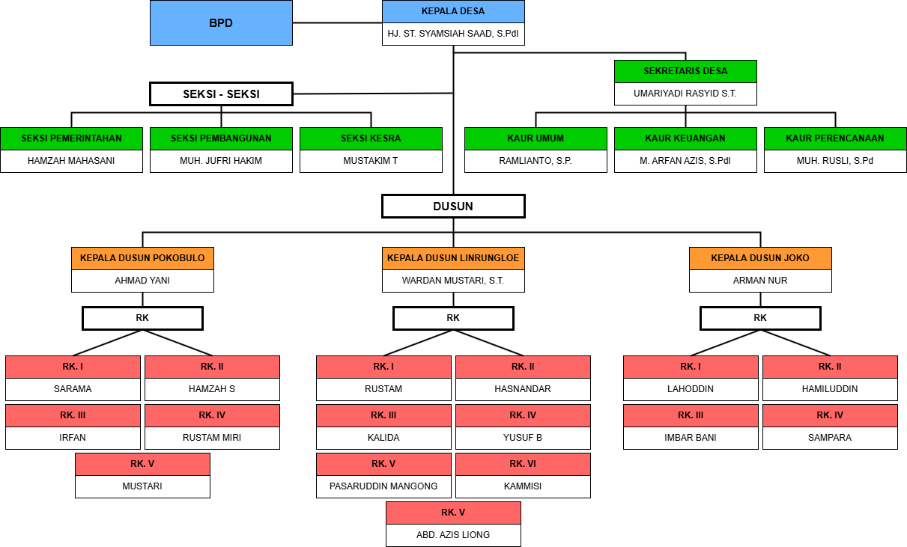

PETA SARANA DAN INFRASTRUKTUR DESA
Desa Bangkalaloe

Kepala Desa Bangkalaloe
TERWUJUDNYA
JULUBORITTA PLUS
MAJU, INKLUSIF, BERSIH, INOVATIF, RELIGIUS, DAN TERTATA sesuai prinsip PEMBANGUNAN BERKELANJUTAN MELALUI SDGs DESA
1. MEMBANGUN MENTAL, FISIK DAN SPRITUAL DESA DAN MASYARAKAT
2. MENINGKATKAN TATA KELOLA PENYELENGGARAAN PEMERINTAHAN DESA YANG BAIK DAN BERSIH
3. MENINGKATKAN AKSES DAN KUALITAS PELAYANAN DASAR SECARA INKLUSIF
4. MENINGKATKAN PEREKONOMIAN DESA BERBASIS POTENSI LOKAL DAN INOVASI
5. MENINGKATKAN DAN PEMERATAAN PEMBANGUNAN INFRASTRUKTUR PEDESAAN
6. MENINGKATKAN KEMITRAAN DAN PERLUASAN JEJARING DALAM PERCEPATAN PEMBANGUNAN DESA
7. MENINGKATKAN PEMBINAAN KEMASYARAKATAN DAN PEMBERDAYAAN MASYARAKAT DESA
